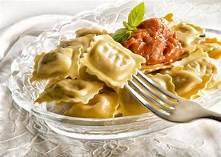

Ravioli de Queijo
Ingredientes
- Massa para ravioli (pode ser comprada pronta)
- 250g de queijo ricota
- 100g de queijo parmesão ralado
- 1 ovo
- Noz-moscada a gosto
- Sal e pimenta-do-reino a gosto
- Molho de tomate ou molho branco para servir
- Folhas de manjericão fresco para decorar
Modo de Preparo
- Em uma tigela, misture a ricota, o queijo parmesão ralado, o ovo, a noz-moscada, o sal e a pimenta-do-reino.
- Abra a massa para ravioli sobre uma superfície enfarinhada e corte em quadrados pequenos.
- Coloque uma porção do recheio no centro de metade dos quadrados de massa.
- Cubra cada quadrado com outro quadrado de massa, pressionando bem as bordas para selar.
- Cozinhe os raviolis em água fervente com sal por cerca de 3-4 minutos ou até que subam à superfície.
- Retire com uma escumadeira e sirva imediatamente com molho de tomate ou molho branco.
- Decore com folhas de manjericão fresco.